Follow Beaker



Beaker is a notebook-style development environment for working interactively with large and complex datasets. Its plugin-based architecture allows you to switch between languages or add new ones with ease, ensuring that you always have the right tool for any of your analysis and visualization needs.